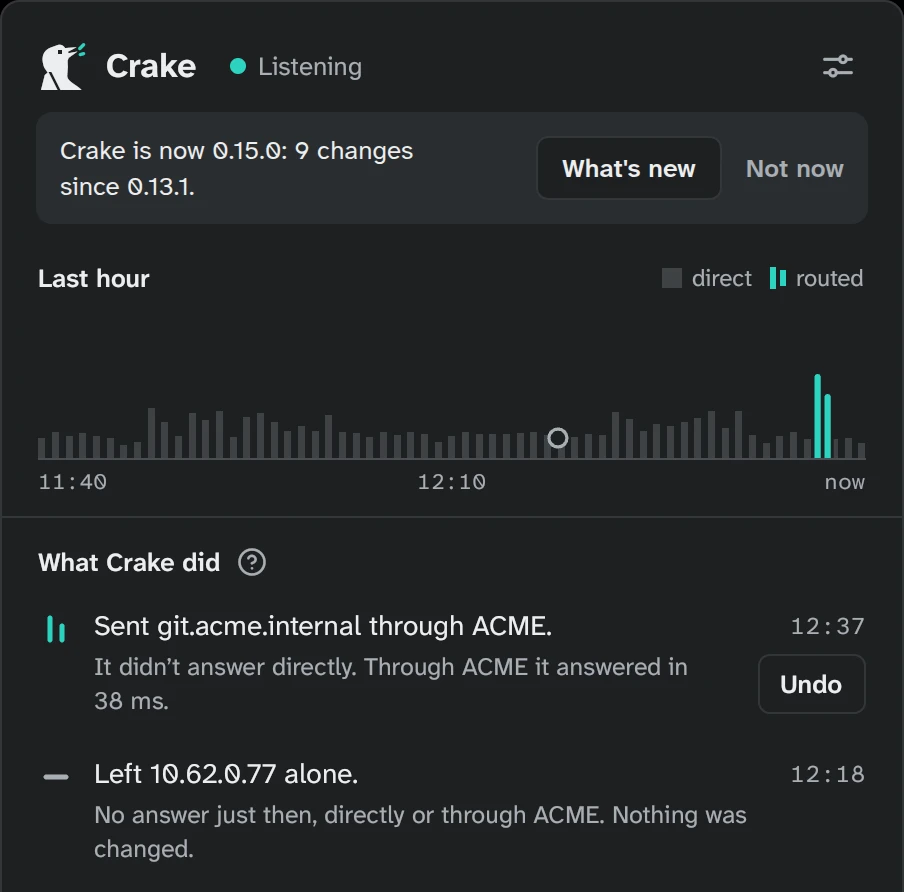

Proposal: What's new
After an update, Crake says so once, and shows what changed since the version you had, in the
changelog's own words. CHANGELOG.md is already written for the people using Crake, so it's built into the app:
the installed version's own list, nothing fetched. Asked for by the user (2026-10-21), "quieter" chosen over an
icon per kind. Reviewed twice (the design rules; the behaviour) and revised: what's drawn here is round two.
- 1 · The moment: the first time the panel opens on a version you haven't seen, a notice in the
notices' place.
- 2 · The window: the versions since the one you had, each version's changes under small headings.
- 3 · Settings → About: "What's new" first in its links, to read it again any time.
- 4 · The changelog: each release's changes sorted into kinds from now on.
Captured from the app (demo, dark) and drawn to its measurements; the window is drawn live (the toggle top right
switches its theme).
1 · The moment, the first time the panel opens after an update
The notices' shape (DESIGN.md): a sentence on the surface tint, a bordered action, a muted Not now.
Neutral: nothing needs you (no amber), nothing was decided (no teal). "Crake is now 0.15.0: 9 changes since
0.13.1." says the one number that matters (Underneath's lines don't count: they're not changes you'd notice); when the version you had isn't known (anyone coming from 0.14.0 or
earlier, before Crake kept it), just "Crake is now 0.15.0." It doesn't start as the restart notice does ("Crake
was updated to 0.15.0. Restart it to finish."), which can come just before it. What's new opens the window; Not
now puts it away for good (About has it).
After an update

2 · The window
Every window's title row (20 px in, the hairline at 56, the same ×), its subtitle the window's
span: "Since 0.13.1, the version you had" (opened from About: none). The content 20 px in, under the title.
Newest first: each version's number (17, 700) and date (mono, as the changelog writes it), then its changes
under small headings (13, 600, muted) in the order New, Better, Changed, Fixed, Underneath (a kind with nothing
in it isn't shown); each change a headline (15, 600) and its sentences (14, muted), whole, as CHANGELOG.md has
them. Up to three versions in full; "Show earlier versions" opens the rest in place, and goes when nothing is
left. Scrolls when long. No teal: nothing here is a decision.
What's newSince 0.13.1, the version you had✕
0.15.02026-10-22
New
What's new, after an update.
The first time you open the panel after Crake is updated, it says so, and What's new shows what changed since the version you had. Settings → About has it too.
Better
"Crake X is out" downloads the installer itself on Windows and Mac.
Its Download button opened the release's page, with a file for every system; it now fetches the one for your computer (the ARM installer on Windows on ARM).
Fixed
A company site with a public and a private address stays inside, over IPv6 too.
When your company's DNS gives a public name a private address, Crake sends it through the tunnel; the name's public IPv6 address was still handed out, and an app that tries IPv6 first went to the public site, which turns outsiders away. Now only the private address is given.
The first connection to a host Crake just learned is no longer cut off.
If the app tried again at the very moment Crake routed the host, that try could leave the tunnel with your network's own address; where the gateway could answer that address (on the office network), the page started loading and was then reset. Nothing leaves a tunnel with another address now, so the app's next try goes through.
0.14.02026-10-21
New
IPsec gateways that prove themselves with a certificate.
New tunnel asks how the gateway proves itself: with a key from your IT team, or with its certificate, as a website does. Crake checks that the certificate is for the gateway, signed by an authority this computer knows or by the one your IT team gave. When no authority here vouches for it, Crake shows you whose it is and who signed it, and asks before trusting it, as it does for AnyConnect gateways. If it changes later, Crake asks again and says so. A certificate made out to another name is never offered to be trusted.
Sign in to an IPsec gateway with your own certificate.
New tunnel's step 2 offers "Certificate" and "Certificate and password" beside "Username and password": choose the .p12, .pfx or .pem file your IT team gave you, and Crake keeps a copy in your keyring. Its password is asked as "Unlock your certificate", and remembered when you tick it. A certificate that has run out is said before anything is sent. A certificate the gateway turns down is said as the certificate, not the password.
Better
A failed sign-in names who said why.
When an IPsec or OpenVPN tunnel couldn't sign in, the sign-in window put strongSwan's or OpenVPN's words after "openconnect said:". It now names them.
Fixed
"Remember the password in your keyring" for a certificate's file is kept.
Ticked when OpenVPN asked for a profile key's password, it was shown but forgotten.
No AnyConnect groups for an IPsec tunnel.
Choosing IPsec at a gateway that also answered as AnyConnect showed AnyConnect's sign-in groups, which IPsec doesn't use.
Show earlier versions
3 · Settings → About
"What's new" first in About's links, in the small actions' look (ink, semibold, underlined); the
only one that opens a window, not the web. It opens at the current version, with "Show earlier versions" below
(at the versions since the one you had while the panel's notice is still waiting). Opening it counts as seen.
4 · The changelog, from now on
Each release's changes under the window's kinds; the entries as today (a bold headline, the rest
after it). New: something you couldn't do before. Better: something that works better than it did.
Changed: something that works differently, or is gone. Fixed: something that was wrong, a
dependency's security fix included. Underneath: what Crake is built on, updated (the dependency lines).
release.sh refuses an empty release, as now, and a change outside a kind. A release with nothing but Underneath
doesn't raise the panel's notice (About still lists it). The releases from 0.10.0 are sorted into kinds by hand,
in the same commit; 0.1.0 to 0.9.x stay as they were written, shown as "Changes" under "Show earlier versions".
The GitHub release's text keeps the kinds, and its "Which file?" table moves under a rule.
Today
## 0.14.0 (2026-10-21)
- **IPsec gateways that prove themselves with a
certificate.** New tunnel asks how the gateway
proves itself: …
- **No AnyConnect groups for an IPsec tunnel.**
Choosing IPsec at a gateway that …
After
## 0.14.0 (2026-10-21)
### New
- **IPsec gateways that prove themselves with a
certificate.** New tunnel asks how the gateway
proves itself: …
### Fixed
- **No AnyConnect groups for an IPsec tunnel.**
Choosing IPsec at a gateway that …
How it behaves (from the behaviour review)
- Fresh install or update: no app.json yet is a fresh install: Crake keeps its version and says
nothing. app.json without a version seen (everyone coming from 0.14.0 or earlier) is an update from before
Crake kept it: "Crake is now 0.15.0." and the current version alone. The version seen is a field of its own
in app.json.
- One version notice at a time: Restart first (a package updated craked), then "X is out", then this
one, which waits until it's shown.
- A version back (a downgrade): nothing said; the highest version seen is kept.
- Built in: CHANGELOG.md is read when Crake is built (the Nix package's file set gets it), and a test
reads the whole file: a section for this version (or Unreleased in a development build), known kinds only,
the entries as written (wrapped lines, code, blank lines between entries).
- Keyboard: the window takes focus when it opens; Escape closes it; the arrow keys and Page Up/Down
scroll; "Show earlier versions" is reached with Tab. GPUI gives screen readers nothing yet, so none of this
is promised to them.
- Tests: the rules above as unit tests; window tests (since the version seen, the three-version cap,
Show earlier versions, Escape, Not now keeping the version); a journey step (an older version seen, the
panel's notice, What's new, the window, About's link); and CRAKE_DEMO=whatsnew.
Not in this proposal, on purpose. No notification at login (the panel is where Crake talks),
no badge on the tray's bird (its marks say what the tunnels do), no window that opens by itself, and nothing
fetched from the web: the list is the installed version's own.
Set aside in round one. A link in the panel's header ("What's new in 0.15.0" beside
"Listening"): the header carries only status, and the link had no dismissal. A word before each change in a mono
badge ("New", "Fixed"): an icon per kind in another form, which "quieter" turned down, and mono is for machine
facts.